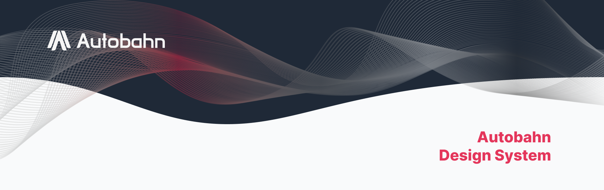
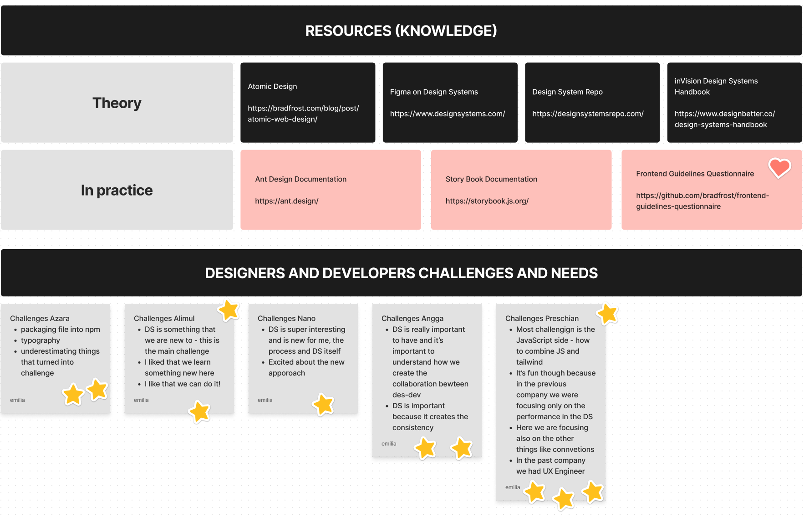
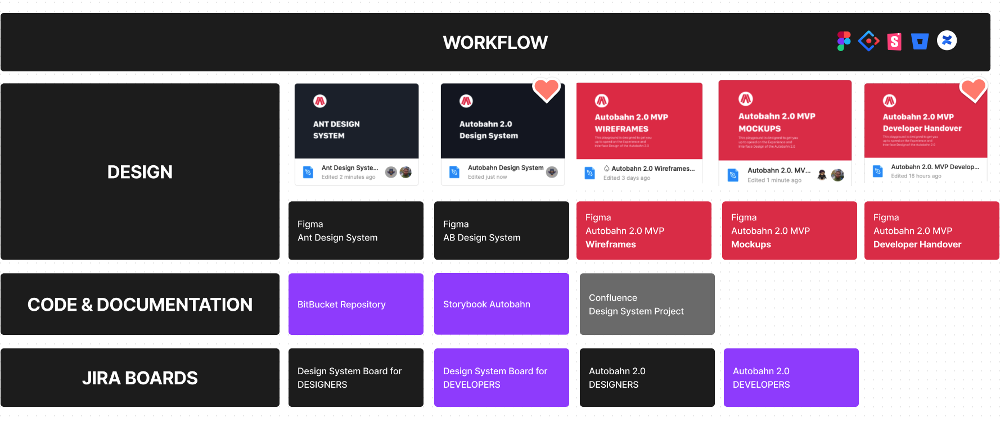
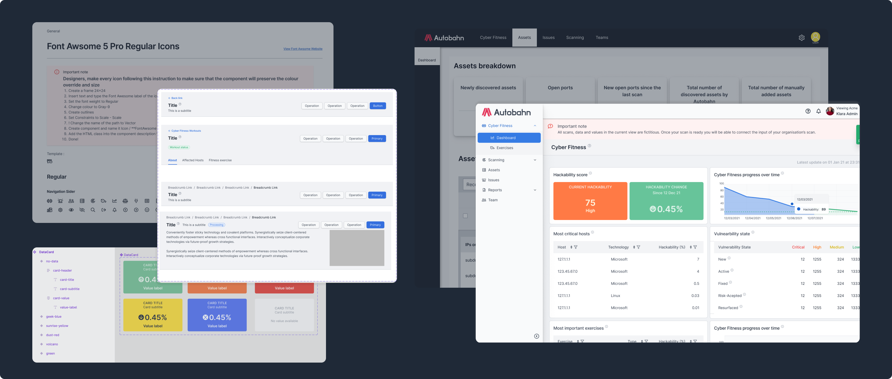

Autobahn Design System#
Autobahn is an all-inclusive cybersecurity platform that reduces the need for human capital with scalable solutions and provides effective prioritization to work on the right vulnerability issues. The product was initially delivered as a proof of concept to the first customers in 2021 by Security Research Labs, a cyber security consultancy, and then established as a separate entity.
The business objective was to bring the app to the next level. The decision to move from vueJS to React opened the opportunity to redesign the web app user interface. Strategically it was also the best moment to implement the design system. As the most experienced designer on the team, I was responsible for creating the design system.
Project phases included:
conduct the research
plan strategically
build the system
train team members
evangelize and maintain the system
Challenges#
Lack of consistency in the interface and poor usability.
Limited human resources and ambitious delivery goals.
Challenging collaboration between the teams due to the missing documentation and clear guidelines.
Major issues in the front-end code.
Key questions#
First, we established a set of key questions that would guide us through the process:
Who and how often will be using the design system?
What technical aspects are important to be successful?
How will we make sure that all teams stay up to date and on the same page?
Research and Requirements Defintion#
During the research phase, I analyzed designsystemsrepo.com and other publicly available resources. Then I audited the existing UI and considered possible scenarios for the future. As a final part of the research, I conducted a “Developers and Designers Challenges and Needs Workshop” to find out the pain points and challenges of the team members.

The core requirements to decide which design system we will use as a template were:
built with B2B data-heavy products in mind
easy to customize and works with React
well supported in Figma and, preferably in advanced prototyping tools like UXPin or Axure
well-structured and detailed documentation
support diverse variants of tables and filters components
I have discovered that Ant Design fills all product needs and we decided to proceed with it and suggested Storybook for the development environment.
Building the System and Documenting on the Go#
The main strategic challenges during the process were the limited resources and the need to continue developing the next-generation version of the product. Our goal and the biggest challenge was to wireframe and mockup nine new views for the web app while building a design system. To achieve this, I decided to leverage the Figma Ant Design Package and use it as our component design base. Next, we iterated over the wireframes with the design and product teams to identify the required components for each view.

After that, I selected the appropriate components from the UI Kit, customized them to our needs, and moved them to the Autobahn Design System. Then, the UI Designers created the final mockups of the views and submitted them for review. At the end of each cycle we delivered the assets to the design system developers and the web app developers accordingly.
